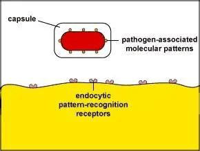
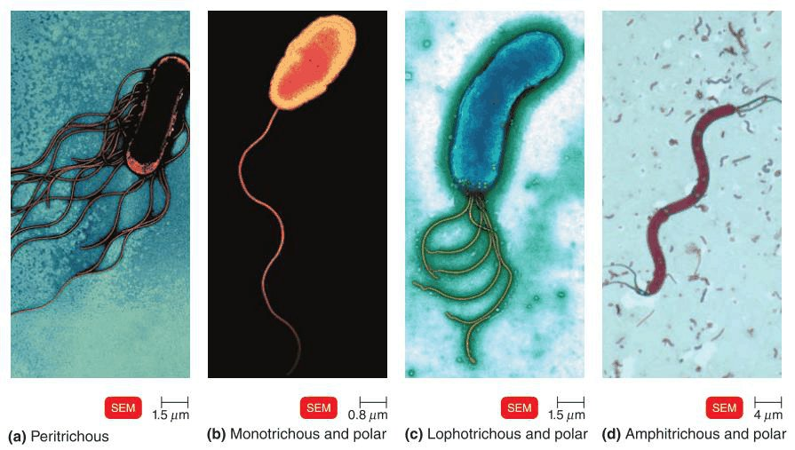
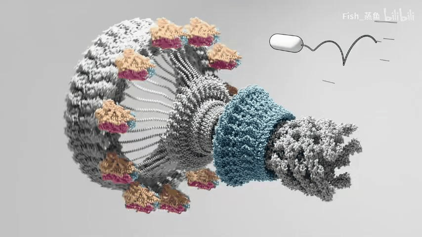
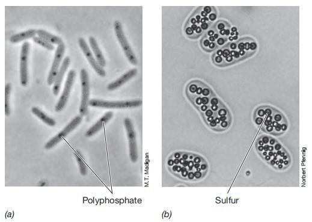
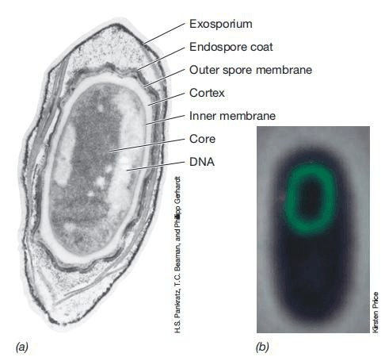

External and Internal Structuresساختارهای خارجی و داخلی
The envelope decides what a bacterium is. These structures decide what it can do: stick to a catheter, swim up a ureter, hide from a phagocyte, hand a resistance gene to a neighbour, or survive boiling for an hour. Almost every one of them is a virulence factor, and several are the reason a particular infection is hard to treat.پوشش سلولی تعیین میکند که یک باکتری چیست. این ساختارها تعیین میکنند که چه میتواند بکند: به کاتتر بچسبد، در حالب شنا کند، از فاگوسیت پنهان شود، ژن مقاومت را به همسایه بدهد، یا یک ساعت جوشیدن را تاب بیاورد. تقریباً هر یک از اینها یک عامل حدت است و چند مورد از آنها دلیل دشواری درمان عفونتهای خاصی هستند.
By the end of this Part you should be able toدر پایان این بخش باید بتوانید
Explain how the capsule defeats phagocytosis and how vaccines get round it.توضیح دهید کپسول چگونه فاگوسیتوز را خنثی میکند و واکسنها چگونه از آن عبور میکنند.
Distinguish flagella, pili and fimbriae on structure, function and composition.تاژک، پیلی و فیمبریه را از نظر ساختار، عملکرد و ترکیب تفکیک کنید.
Describe sporulation step by step and explain each source of spore resistance.اسپورزایی را گامبهگام شرح دهید و هر منبع مقاومت هاگ را توضیح دهید.
Say why plasmids matter clinically even though they carry no essential genes.بگویید چرا پلاسمیدها با وجود نداشتن ژنهای ضروری، از نظر بالینی اهمیت دارند.
4.1Capsule, Slime Layer and Biofilmکپسول، لایهٔ لزج و بیوفیلم
Definitionتعریف
A capsule is a well-organised layer firmly attached outside the cell wall, usually made of polysaccharide and less frequently of polypeptide, glycoprotein or glycolipid. A slime layer is the same kind of material but loosely attached, unorganised and easily washed off. Both are collectively called the glycocalyx. Neither is present in all bacteria — and it varies even between strains of a capsule-forming species — because neither is essential for viability.کپسول لایهای سازمانیافته است که محکم به بیرون دیوارهٔ سلولی چسبیده و معمولاً از پلیساکارید و کمتر از پلیپپتید، گلیکوپروتئین یا گلیکولیپید ساخته شده. لایهٔ لزج همان جنس ماده است اما شل، نامنظم و بهراحتی شستهشدنی. هر دو را با هم گلیکوکالیکس مینامند. هیچکدام در همهٔ باکتریها وجود ندارد — و حتی میان سویههای یک گونهٔ کپسولدار هم متفاوت است — چون هیچکدام برای بقا ضروری نیست.
Mechanism — how a capsule defeats the immune systemمکانیسم — کپسول چگونه سیستم ایمنی را شکست میدهد
The capsule is highly hydrated and strongly negatively charged.Phagocyte surfaces are also negatively charged, so like charges repel. The bacterium is physically pushed away before contact is even attempted.کپسول بسیار آبدار و دارای بار منفی قوی است.سطح فاگوسیتها نیز بار منفی دارد، پس بارهای همنام یکدیگر را دفع میکنند. باکتری حتی پیش از تلاش برای تماس، بهصورت فیزیکی رانده میشود.
It masks the underlying cell wall antigens — the PAMPs that phagocyte receptors recognise.A phagocyte cannot ingest what it cannot recognise. The capsule is a smooth, poorly immunogenic coat hiding a highly immunogenic surface.آنتیژنهای دیوارهٔ زیرین را میپوشاند — همان الگوهایی که گیرندههای فاگوسیت شناسایی میکنند.فاگوسیت نمیتواند چیزی را ببلعد که نمیشناسد. کپسول پوششی صاف و کمایمنیزاست که سطحی بهشدت ایمنیزا را پنهان میکند.
It prevents complement C3b from depositing on the cell surface.C3b is the principal opsonin: phagocytes carry C3b receptors and use them as handles. No C3b on the surface means no handle to grip.از رسوب C3b کمپلمان روی سطح سلول جلوگیری میکند.C3b اصلیترین اپسونین است: فاگوسیتها گیرندهٔ C3b دارند و از آن بهعنوان دستگیره استفاده میکنند. نبودِ C3b روی سطح یعنی نبودِ دستگیره.
The organism therefore survives in blood and tissue and can cause invasive disease.This is why encapsulated organisms cause bacteraemia, meningitis and pneumonia rather than staying at a mucosal surface.بنابراین میکروارگانیسم در خون و بافت زنده میماند و میتواند بیماری مهاجم ایجاد کند.به همین دلیل میکروارگانیسمهای کپسولدار باکتریمی، مننژیت و پنومونی ایجاد میکنند بهجای آنکه در سطح مخاط باقی بمانند.
Anticapsular antibody restores opsonisation. Antibody binds the capsule, and phagocytes grip the Fc portion.This is the entire basis of the pneumococcal, meningococcal and Hib vaccines. Because pure polysaccharide is a T-independent antigen and works poorly in children under 2, the polysaccharide is conjugated to a protein carrier, which recruits T-cell help and produces lasting memory. That single design decision is why Hib meningitis has nearly vanished.آنتیبادی ضدکپسولی، اپسونیزاسیون را بازمیگرداند. آنتیبادی به کپسول متصل میشود و فاگوسیتها بخش Fc را میگیرند.تمام مبنای واکسنهای پنوموکوک، مننگوکوک و هموفیلوس همین است. چون پلیساکارید خالص یک آنتیژن مستقل از T است و در کودکان زیر دو سال ضعیف عمل میکند، پلیساکارید را به یک حامل پروتئینی کونژوگه میکنند که کمک لنفوسیت T را جلب کرده و خاطرهٔ ماندگار میسازد. همین یک تصمیم طراحی، دلیل ناپدیدشدن تقریبی مننژیت هموفیلوسی است.
The capsule is the single most important anti-phagocytic virulence factor in bacteriology, and encapsulated organisms are the ones asplenic patients must be vaccinated against.کپسول مهمترین عامل حدت ضدفاگوسیتی در باکتریشناسی است و میکروارگانیسمهای کپسولدار همانهایی هستند که بیماران بدون طحال باید علیه آنها واکسینه شوند.
Mnemonic — the encapsulated organismsیادیار — میکروارگانیسمهای کپسولدار
"Some Nasty Killers Have Some Capsule Protection" Streptococcus pneumoniaeG+ · Neisseria meningitidisG− · Klebsiella pneumoniaeG− · Haemophilus influenzae type b G− · SalmonellaG− · Cryptococcus neoformans (a fungus) · Pseudomonas aeruginosaG−.
This list is arbitrary, which is why a mnemonic is appropriate here. Asplenic patients and those with sickle cell disease must be vaccinated against the first three, because the spleen is the main site of clearing encapsulated organisms from blood."Some Nasty Killers Have Some Capsule Protection" این فهرست واقعاً قراردادی است و به همین دلیل یادیار اینجا مناسب است. بیماران بدون طحال و مبتلایان به بیماری سلول داسی باید علیه سه مورد نخست واکسینه شوند، چون طحال محل اصلی پاکسازی میکروارگانیسمهای کپسولدار از خون است.
Lab Pearl — seeing the capsuleنکتهٔ آزمایشگاهی — دیدن کپسول
Capsules are not stained by the Gram stain — they appear as a clear halo around the cell. To demonstrate one: India ink / nigrosin negative stain (the background is stained, the capsule stays clear — classic for Cryptococcus neoformans in CSF), or the quellung reaction, in which anticapsular antiserum makes the capsule appear to swell — historically the definitive test for S. pneumoniae. On an agar plate, heavily encapsulated organisms such as Klebsiella give mucoid, stringy colonies you can draw into a thread with a loop.کپسولها با رنگ گرم رنگ نمیگیرند — بهصورت هالهٔ شفاف اطراف سلول دیده میشوند. برای نمایش آنها: رنگآمیزی منفی با جوهر هند یا نیگروزین (زمینه رنگ میگیرد و کپسول شفاف میماند — کلاسیک برای Cryptococcus neoformans در مایع مغزی–نخاعی)، یا واکنش کوئلونگ که در آن آنتیسرم ضدکپسولی باعث میشود کپسول متورم بهنظر برسد — از نظر تاریخی آزمون قطعی برای پنوموکوک. روی پلیت آگار، میکروارگانیسمهای پرکپسول مانند کلبسیلا کلنیهای موکوئیدی و کشدار میدهند که با لوپ میتوان آنها را بهشکل نخ کشید.
Biofilm. When bacteria attach to a surface and secrete an extracellular polymeric matrix, they form a biofilm — a structured community, not free-floating cells. Biofilms matter clinically for three reasons: antibiotics penetrate the matrix poorly; cells deep inside are metabolically dormant and so escape drugs that need active growth (β-lactams, aminoglycosides); and phagocytes cannot engulf a surface-attached mass. This is why infected prosthetic joints, heart valves, and intravascular catheters usually have to be removed rather than treated — the single most practical consequence of this whole section. Staphylococcus epidermidisG+ is the classic biofilm former on plastic.بیوفیلم. وقتی باکتریها به یک سطح میچسبند و ماتریکس پلیمری خارجسلولی ترشح میکنند، بیوفیلم میسازند — یک جامعهٔ ساختارمند، نه سلولهای شناور آزاد. بیوفیلمها از سه جهت بالینی مهماند: آنتیبیوتیکها بهسختی در ماتریکس نفوذ میکنند؛ سلولهای عمقی از نظر متابولیک خاموشاند و از داروهایی که به رشد فعال نیاز دارند (بتالاکتامها، آمینوگلیکوزیدها) فرار میکنند؛ و فاگوسیتها نمیتوانند تودهٔ چسبیده به سطح را ببلعند. به همین دلیل مفاصل مصنوعی، دریچههای قلب و کاتترهای داخل عروقی عفونی معمولاً باید خارج شوند نه درمان — عملیترین پیامد کل این بخش. Staphylococcus epidermidis سازندهٔ کلاسیک بیوفیلم روی پلاستیک است.

Fig 4.1 Why the capsule works, in one picture. The wall underneath carries pathogen-associated molecular patterns that the phagocyte's pattern-recognition receptors are built to grip. The capsule simply covers them. The receptors are intact, the ligand is intact — they just never meet.چرا کپسول کار میکند، در یک تصویر. دیوارهٔ زیرین حامل الگوهای مولکولی مرتبط با پاتوژن است که گیرندههای الگوشناس فاگوسیت برای گرفتن آنها ساخته شدهاند. کپسول صرفاً آنها را میپوشاند. گیرنده سالم است، لیگاند سالم است — فقط هرگز به هم نمیرسند.
4.2Flagella, Motility and Chemotaxisتاژک، تحرک و کموتاکسی
A flagellum is a long, thin, helical appendage made of the protein flagellin, driven by a rotary motor embedded in the cell envelope and powered by the proton motive force — not by ATP directly. It has three parts: the filament (external), the hook (a flexible coupling), and the basal body (the motor).تاژک زائدهای بلند، نازک و مارپیچی از پروتئین فلاژلین است که با یک موتور چرخان نشانده در پوشش سلولی و با نیروی محرکهٔ پروتونی — نه مستقیماً با ATP — میچرخد. سه بخش دارد: رشته (خارجی)، قلاب (اتصال انعطافپذیر) و جسم پایه (موتور).
Monotrichous — one polar flagellum (Vibrio choleraeG−).مونوتریش — یک تاژک قطبی.
Lophotrichous — a tuft at one pole. Amphitrichous — one or a tuft at each pole.لوفوتریش — دستهای در یک قطب. آمفیتریش — در هر دو قطب.
Peritrichous — distributed over the whole surface (E. coli, Salmonella, ProteusG−).پریتریش — پراکنده در تمام سطح.
Chemotaxis is directed movement along a chemical gradient. Chemoreceptors detect attractants and repellents and bias the motor's behaviour: counter-clockwise rotation bundles peritrichous flagella and the cell runs smoothly forward; clockwise rotation breaks the bundle apart and the cell tumbles and reorients randomly. The bacterium cannot steer — it simply lengthens the runs when conditions are improving, which over time carries it up the gradient. That is a biased random walk, not navigation.کموتاکسی حرکت جهتدار در امتداد یک گرادیان شیمیایی است. گیرندههای شیمیایی، جاذبها و دافعها را حس کرده و رفتار موتور را سوگیری میدهند: چرخش پادساعتگرد تاژکهای پریتریش را دسته میکند و سلول بهآرامی میدود؛ چرخش ساعتگرد دسته را میشکند و سلول میچرخد و تصادفی جهت عوض میکند. باکتری نمیتواند فرمان بدهد — صرفاً وقتی شرایط بهتر میشود دویدنها را طولانیتر میکند، که بهمرور او را در جهت گرادیان میبرد. این یک گشت تصادفیِ سوگیریشده است، نه ناوبری.
Clinical Correlationارتباط بالینی
Flagellin is the H antigen used in serotyping (the "H7" of E. coli O157:H7) and a potent TLR5 ligand. Motility is a genuine virulence factor: uropathogenic E. coli and Proteus mirabilisG− swim up the ureters to cause pyelonephritis, and Helicobacter pyloriG− uses its flagella to burrow through gastric mucus to the epithelial surface where the pH is survivable. On a plate, Proteus is so motile it swarms across the whole agar surface in concentric waves instead of forming discrete colonies — an instantly recognisable lab finding.فلاژلین همان آنتیژن H است که در سروتایپینگ بهکار میرود (همان H7 در E. coli O157:H7) و لیگاند قوی TLR5. تحرک یک عامل حدت واقعی است: E. coli اوروپاتوژن و Proteus mirabilis در حالبها به سمت بالا شنا میکنند و پیلونفریت ایجاد مینمایند، و Helicobacter pylori با تاژکهایش از میان موکوس معده تا سطح اپیتلیوم که pH آن قابلتحمل است نقب میزند. روی پلیت، پروتئوس چنان متحرک است که بهجای کلنیهای مجزا، در امواج هممرکز روی تمام سطح آگار میخزد — یافتهای آزمایشگاهی که فوراً قابلتشخیص است.

Fig 4.2 The four arrangements, in real cells. (a) Peritrichous — flagella all over. (b) Monotrichous — one, at a pole. (c) Lophotrichous — a tuft at one pole. (d) Amphitrichous — at both poles. Arrangement is a fixed species trait, so it is a taxonomic character, not a variable state.چهار آرایش، در سلولهای واقعی. (الف) پریتریکوس — تاژکها در سراسر سطح. (ب) مونوتریکوس — یکی، در یک قطب. (ج) لوفوتریکوس — دستهای در یک قطب. (د) آمفیتریکوس — در هر دو قطب. آرایش، صفتی ثابت در هر گونه است، پس یک شاخص ردهبندی محسوب میشود نه حالتی متغیر.
Lab Pearl — you cannot see a flagellum on a routine slideنکتهٔ آزمایشگاهی — تاژک در لام معمولی دیده نمیشود
A flagellum is about 20 nm across — far below the resolution of the light microscope. It becomes visible only after a flagellar stain, which deposits mordant along the filament until it is thick enough to see. So "non-motile on the Gram stain" is meaningless: motility is assessed by a hanging-drop preparation or by spreading growth in semi-solid motility medium, never by looking at a stained smear.قطر تاژک حدود ۲۰ نانومتر است — بسیار پایینتر از قدرت تفکیک میکروسکوپ نوری. تنها پس از رنگآمیزی تاژک دیده میشود، که تثبیتکننده را در طول رشته مینشاند تا به ضخامت قابلرؤیت برسد. پس «بدون حرکت در رنگ گرم» بیمعناست: تحرک با قطرهٔ آویزان یا با گسترش رشد در محیط نیمهجامد تحرک سنجیده میشود، نه با نگاهکردن به گسترش رنگشده.
4.3Pili and Fimbriaeپیلی و فیمبریه
Both terms describe short, straight, hair-like protein appendages that are shorter and thinner than flagella and not involved in motility. Usage varies: many texts use fimbriae for the numerous short attachment structures and pilus for the single long conjugative one; others use the words interchangeably. Know both conventions.هر دو اصطلاح به زوائد پروتئینی کوتاه، مستقیم و مومانند اشاره دارند که کوتاهتر و نازکتر از تاژک و بدون نقش در تحرکاند. کاربرد متفاوت است: بسیاری از متون فیمبریه را برای ساختارهای کوتاه و پرشمار چسبندگی و پیلوس را برای همان یک پیلی بلند کونژوگاسیون بهکار میبرند؛ برخی دیگر این دو را بهجای هم میگویند. هر دو قرارداد را بدانید.
Table 4.1 Common pili versus sex piliجدول ۴.۱ — پیلی معمولی در برابر پیلی جنسی
Common pili / fimbriaeپیلی معمولی / فیمبریه
Sex (conjugative, F) pilusپیلی جنسی (کونژوگاتیو، F)
Numberتعداد
Hundreds per cellصدها عدد در هر سلول
Only 1–4 per bacteriumفقط ۱ تا ۴ در هر باکتری
Dimensionsابعاد
Shorter and thinnerکوتاهتر و نازکتر
Longer and broaderبلندتر و پهنتر
Made ofجنس
Pilin protein, tipped with adhesinsپروتئین پیلین با ادهزین در نوک
Pilin proteinپروتئین پیلین
Functionعملکرد
Attachment to host cells and surfaces — colonisationاتصال به سلول میزبان و سطوح — کلونیزاسیون
Conjugation — DNA transfer between bacteriaکونژوگاسیون — انتقال DNA بین باکتریها
Encoded byکدشده توسط
Chromosomeکروموزوم
F plasmid (fertility factor)پلاسمید F (فاکتور باروری)
Clinical importanceاهمیت بالینی
Uropathogenic E. coli P-pili bind uroepithelium; Neisseria gonorrhoeae pili mediate attachment and undergo antigenic variation to evade antibody — which is why gonorrhoea recurs and has no vaccineپیلیهای P در E. coli اوروپاتوژن به اپیتلیوم ادراری میچسبند؛ پیلیهای N. gonorrhoeae هم واسطهٔ اتصالاند و هم تنوع آنتیژنی نشان میدهند تا از آنتیبادی فرار کنند — به همین دلیل سوزاک عود میکند و واکسن ندارد
The main route of antibiotic-resistance gene spread between speciesمسیر اصلی گسترش ژن مقاومت آنتیبیوتیکی بین گونهها
Exam Trapدام امتحانی
From the Lecture 2 MCQ set: pili are made of protein, they allow attachment, and they contain adhesins — but they do not facilitate nutrient transport. That last statement is the false one. Transport is the job of the membrane, not of a surface appendage. A companion question asks what capsule and pili have in common: the answer is that both permit attachment to surfaces — not that both are protein (the capsule is usually polysaccharide) and not that either contains DNA.از مجموعه سؤالات درس ۲: پیلیها از پروتئین ساخته شدهاند، امکان اتصال میدهند و حاوی ادهزین هستند — اما انتقال مواد غذایی را تسهیل نمیکنند. جملهٔ آخر نادرست است. انتقال وظیفهٔ غشاست نه زائدهٔ سطحی. سؤال همراه میپرسد کپسول و پیلی چه وجه اشتراکی دارند: پاسخ این است که هر دو امکان اتصال به سطوح را فراهم میکنند — نه اینکه هر دو پروتئینیاند (کپسول معمولاً پلیساکارید است) و نه اینکه یکی از آنها DNA دارد.

Fig 4.3 Conjugation caught in the act: two cells joined by a single long sex pilus. The pilus is coated in bacteriophage particles, which is how it was first visualised — the phages bind F-pili specifically, so they stain the structure for you. Note the contrast with the short, dense fimbriae covering the cell on the left.کونژوگاسیون در حین وقوع: دو سلول که با یک پیلوس جنسی بلند به هم پیوستهاند. پیلوس با ذرات باکتریوفاژ پوشیده شده است و همینگونه نخستینبار دیده شد — فاژها بهطور اختصاصی به پیلی F میچسبند و عملاً ساختار را برایتان رنگ میکنند. به تضاد آن با فیمبریههای کوتاه و متراکمِ پوشانندهٔ سلول سمت چپ توجه کنید.
4.4Nucleoid, Plasmids and Ribosomesنوکلئوئید، پلاسمید و ریبوزوم
The nucleoidنوکلئوئید
A single circular double-stranded DNA chromosome, haploid, not enclosed by a membrane, supercoiled by DNA gyrase (topoisomerase II) into a compact region called the nucleoid. In E. coli the chromosome is about 1 mm long — roughly a thousand times the length of the cell — so supercoiling is not optional. Being haploid is not a limitation but an advantage: with one copy of every gene there is less to replicate, so the cell divides faster, and a single mutation is expressed immediately rather than masked by a second allele — which is precisely how a population adapts to a new antibiotic within hours.یک کروموزوم DNA حلقوی دورشتهای، هاپلوئید، بدون غشای احاطهکننده، که با DNA ژیراز (توپوایزومراز II) ابرپیچیده و در ناحیهای فشرده به نام نوکلئوئید جمع میشود. در E. coli طول کروموزوم حدود یک میلیمتر است — تقریباً هزار برابر طول سلول — پس ابرپیچش اختیاری نیست. هاپلوئید بودن محدودیت نیست بلکه مزیت است: با یک نسخه از هر ژن، چیز کمتری برای همانندسازی هست، پس سلول سریعتر تقسیم میشود، و یک جهش بیدرنگ بروز میکند نه آنکه با آلل دوم پوشانده شود — و دقیقاً به همین شکل است که یک جمعیت در عرض چند ساعت با آنتیبیوتیک تازه سازگار میشود.
DNA gyrase is the target of the fluoroquinolones (ciprofloxacin, levofloxacin). Blocking it prevents the supercoiling needed for replication, so the chromosome cannot be copied.DNA ژیراز هدف فلوروکینولونهاست (سیپروفلوکساسین، لووفلوکساسین). مسدودکردن آن مانع ابرپیچش لازم برای همانندسازی میشود و کروموزوم قابل نسخهبرداری نیست.
Plasmidsپلاسمیدها
Definitionتعریف
A plasmid is a small, circular, double-stranded DNA molecule that replicates independently of the chromosome and carries genes that are not essential for growth under normal conditions.پلاسمید مولکول DNA کوچک، حلقوی و دورشتهای است که مستقل از کروموزوم همانندسازی میکند و ژنهایی را حمل مینماید که برای رشد در شرایط عادی ضروری نیستند.
They typically carry: antibiotic-resistance genes (R plasmids — often several at once, which is how multidrug resistance spreads as a package); virulence factors such as exotoxins and adhesins; bacteriocins; and the fertility (F) factor that encodes the sex pilus. They are transferred horizontally by conjugation, meaning resistance can jump between species and even genera — Klebsiella to E. coli, for instance, within a single patient's gut.معمولاً حمل میکنند: ژنهای مقاومت آنتیبیوتیکی (پلاسمیدهای R — اغلب چند ژن با هم، و به همین شکل مقاومت چنددارویی بهصورت یک بسته منتشر میشود)؛ عوامل حدت مانند اگزوتوکسین و ادهزین؛ باکتریوسینها؛ و فاکتور باروری F که پیلی جنسی را کد میکند. انتقال آنها افقی و از طریق کونژوگاسیون است، یعنی مقاومت میتواند بین گونهها و حتی جنسها بپرد — مثلاً از کلبسیلا به E. coli در رودهٔ یک بیمار.
Exam Trapدام امتحانی
The Lecture 2 MCQ asks which statement about plasmids is correct. The answer is "may contain antibiotic resistance genes." The distractors are all false: plasmids replicate independently, not with the chromosome; they do not contain essential growth information (that is precisely what distinguishes them from the chromosome); and they are far smaller than the chromosome.سؤال درس ۲ میپرسد کدام جمله دربارهٔ پلاسمید درست است. پاسخ: «ممکن است ژنهای مقاومت آنتیبیوتیکی داشته باشند.» گزینههای انحرافی همگی نادرستاند: پلاسمیدها مستقل همانندسازی میکنند نه همراه کروموزوم؛ اطلاعات رشدی ضروری ندارند (و دقیقاً همین آنها را از کروموزوم متمایز میکند)؛ و بسیار کوچکتر از کروموزوماند.
Ribosomesریبوزومها
70S, composed of a 50S and a 30S subunit. The numbers are Svedberg units — a measure of sedimentation rate, which depends on both mass and shape, which is why 50 + 30 = 70, not 80. That apparent arithmetic error is itself a favourite exam question.۷۰S، متشکل از زیرواحدهای ۵۰S و ۳۰S. این اعداد واحد سوِدبرگاند — معیاری از سرعت تهنشینی که هم به جرم و هم به شکل بستگی دارد، و به همین دلیل ۵۰ بهعلاوهٔ ۳۰ میشود ۷۰، نه ۸۰. همین خطای ظاهری در حساب، خودش سؤال محبوبی در امتحان است.
4.5Inclusions and Granulesانکلوزیونها و گرانولها
Storage deposits in the cytoplasm, accumulated when a nutrient is plentiful and consumed when it is scarce: glycogen and poly-β-hydroxybutyrate (carbon), polyphosphate (phosphate and energy), and sulphur granules in some environmental species.ذخایر انباشته در سیتوپلاسم که هنگام فراوانی یک مادهٔ مغذی جمع و در کمبود مصرف میشوند: گلیکوژن و پلی-بتا-هیدروکسیبوتیرات (کربن)، پلیفسفات (فسفات و انرژی)، و گرانولهای گوگرد در برخی گونههای محیطی.
Lab Pearl — metachromatic granulesنکتهٔ آزمایشگاهی — گرانولهای متاکروماتیک
Volutin (metachromatic) granules are polyphosphate deposits that stain a different colour from the dye applied — reddish-purple with methylene blue, which is what "metachromatic" means. They are characteristic of Corynebacterium diphtheriaeG+ and are demonstrated with Albert's or Loeffler's methylene blue stain. Combined with the palisade / "Chinese letter" arrangement, they give a presumptive diagnosis of diphtheria at the microscope — hours before culture.گرانولهای ولوتین (متاکروماتیک) رسوبات پلیفسفاتاند که رنگی متفاوت از رنگ بهکاررفته میگیرند — بنفش–قرمز با متیلن بلو، و معنای «متاکروماتیک» همین است. این گرانولها مشخصهٔ Corynebacterium diphtheriae هستند و با رنگآمیزی آلبرت یا متیلن بلوی لوفلر نشان داده میشوند. همراه با آرایش پالیساد یا «حروف چینی»، تشخیص احتمالی دیفتری را زیر میکروسکوپ میدهند — ساعتها پیش از کشت.

Fig 4.4 Inclusions are visible as refractile bodies without any special stain. (a) Polyphosphate granules — the metachromatic granules of Corynebacterium. (b) Sulfur globules. Inclusions accumulate when a nutrient is in excess, so their presence says something about the environment the organism came from, not about its species alone.انکلوزیونها بدون هیچ رنگآمیزی اختصاصی بهصورت اجسام شکستدهندهٔ نور دیده میشوند. (الف) دانههای پلیفسفات — همان گرانولهای متاکروماتیک کورینهباکتریوم. (ب) گویچههای گوگرد. انکلوزیونها وقتی انباشته میشوند که یک مادهٔ مغذی بیش از حد باشد، پس وجودشان چیزی دربارهٔ محیطی که میکروارگانیسم از آن آمده میگوید، نه فقط دربارهٔ گونهاش.
4.6Endosporesاندوسپورها
Definitionتعریف
An endospore is a dormant, highly resistant, dehydrated survival structure formed inside a vegetative bacterial cell in response to nutrient depletion. It is not a reproductive structure — one cell makes exactly one spore, so there is no increase in cell number.اندوسپور ساختاری خاموش، بسیار مقاوم و آبزداییشده برای بقا است که درون سلول رویشی باکتری و در پاسخ به کمبود مواد غذایی ساخته میشود. ساختاری تولیدمثلی نیست — هر سلول دقیقاً یک هاگ میسازد، پس تعداد سلولها افزایش نمییابد.
Only two medically important genera form endospores, and both are Gram-positive:Bacillus (aerobic — B. anthracis, B. cereus) and Clostridium/Clostridioides (anaerobic — C. tetani, C. botulinum, C. perfringens, C. difficile).تنها دو جنس مهم پزشکی اندوسپور میسازند و هر دو گرممثبتاند:Bacillus (هوازی) و Clostridium/Clostridioides (بیهوازی).
Fig 4.5 Sporulation and germination. Note the asymmetric septum at stage 2 — this is what distinguishes sporulation from ordinary binary fission, and it is the step examiners probe.اسپورزایی و جوانهزنی. به سپتوم نامتقارن در مرحلهٔ ۲ توجه کنید — همین است که اسپورزایی را از تقسیم دوتایی معمول متمایز میکند و همان گامی است که ممتحنان روی آن تمرکز دارند.
Mechanism — sporulation, and why the spore is so hard to killمکانیسم — اسپورزایی و دلیل دشواری کشتن هاگ
Trigger: nutrient depletion (especially carbon or nitrogen) activates the master regulator Spo0A.Sporulation is metabolically expensive and irreversible, so the cell commits only when starvation is confirmed. It is a last resort, not a routine.محرک: کمبود مواد غذایی (بهویژه کربن یا نیتروژن) تنظیمکنندهٔ اصلی Spo0A را فعال میکند.اسپورزایی از نظر متابولیک پرهزینه و برگشتناپذیر است، پس سلول فقط وقتی گرسنگی تأیید شد متعهد میشود. این آخرین راهحل است، نه روال عادی.
DNA replicates and the two copies align along an axial filament.Each of the two compartments to come must receive a complete genome — the forespore cannot inherit half a chromosome.DNA همانندسازی میشود و دو نسخه در امتداد یک رشتهٔ محوری ردیف میشوند.هر یک از دو بخشی که در پی میآید باید یک ژنوم کامل دریافت کند — پیشهاگ نمیتواند نصف کروموزوم را به ارث ببرد.
An asymmetric septum forms, dividing the cell into a small forespore and a large mother cell.This is the defining event. Binary fission produces a symmetrical septum and two equal daughters; sporulation deliberately produces unequal compartments with different genetic programmes.یک سپتوم نامتقارن تشکیل میشود و سلول را به یک پیشهاگ کوچک و یک سلول مادر بزرگ تقسیم میکند.این رویداد تعیینکننده است. تقسیم دوتایی سپتومی متقارن و دو دختر برابر میسازد؛ اسپورزایی عامدانه دو بخش نابرابر با برنامههای ژنتیکی متفاوت ایجاد میکند.
The mother cell engulfs the forespore, which now lies free within the mother's cytoplasm, wrapped in a double membrane.Engulfment is what makes it an endospore — formed inside another cell — and gives it two membranes to build protective layers between.سلول مادر پیشهاگ را میبلعد و پیشهاگ اکنون آزادانه درون سیتوپلاسم مادر و پیچیده در دو غشا قرار میگیرد.همین بلعیدن است که آن را اندوسپور میکند — ساختهشده درون سلولی دیگر — و دو غشا در اختیارش میگذارد تا لایههای محافظ را میانشان بسازد.
Cortex and coats are laid down. A thick layer of modified peptidoglycan (cortex) forms between the two membranes, and the mother cell deposits tough keratin-like protein coats outside it.The coats are a chemical and enzymatic barrier — they exclude disinfectants, lysozyme and most antibiotics. This is why sporicidal chemicals are a special, short list.کورتکس و پوستهها ساخته میشوند. لایهٔ ضخیمی از پپتیدوگلیکان تغییریافته (کورتکس) بین دو غشا شکل میگیرد و سلول مادر پوستههای پروتئینی شبهکراتین مقاوم را بیرون آن رسوب میدهد.پوستهها سدی شیمیایی و آنزیمیاند — ضدعفونیکنندهها، لیزوزیم و بیشتر آنتیبیوتیکها را راه نمیدهند. به همین دلیل مواد شیمیایی هاگکش فهرست کوتاه و ویژهای دارند.
Dehydration and Ca–dipicolinic acid. The core is stripped of water to roughly 10–25% of normal and saturated with calcium dipicolinate, while small acid-soluble proteins (SASPs) coat the DNA.This is the heart of heat resistance. Protein denaturation requires water — a dehydrated core simply cannot be cooked. Ca-DPA stabilises and further dehydrates the core, and SASPs physically shield the DNA from heat and UV damage. Remove water and you remove the mechanism by which heat kills.آبزدایی و کلسیم دیپیکولینات. هستهٔ هاگ تا حدود ۱۰ تا ۲۵ درصد آب طبیعی خشک و از کلسیم دیپیکولینات اشباع میشود، و پروتئینهای کوچک محلول در اسید (SASP)DNA را میپوشانند.این قلب مقاومت حرارتی است. دناتورهشدن پروتئین به آب نیاز دارد — هستهای که آب ندارد صرفاً پخته نمیشود. کلسیم دیپیکولینات هسته را پایدار و بیشتر آبزدایی میکند و SASPها DNA را فیزیکی از آسیب حرارت و فرابنفش محافظت مینمایند. آب را بردارید، سازوکار کشتن با حرارت را برداشتهاید.
The mother cell lyses and releases the mature endospore.The mother cell's death is programmed — it exists only to build and release the spore. In the Lecture 2 MCQ, "mother cell disintegration" is part of sporulation; the false option is "symmetrical cell division", because the septum is asymmetric.سلول مادر لیز میشود و اندوسپور بالغ را آزاد میکند.مرگ سلول مادر برنامهریزیشده است — تنها برای ساخت و آزادسازی هاگ وجود دارد. در سؤالات درس ۲، «تجزیهٔ سلول مادر» جزو اسپورزایی است؛ گزینهٔ نادرست «تقسیم متقارن سلول» است، چون سپتوم نامتقارن است.
Germination occurs when nutrients return: the spore activates, takes up water, degrades its cortex, and a vegetative cell emerges.Germination restores the very vulnerability the spore lacked — which is exactly why therapy for spore-forming infections must continue long enough to catch the newly germinated cells.جوانهزنی با بازگشت مواد غذایی رخ میدهد: هاگ فعال میشود، آب میگیرد، کورتکس خود را تجزیه میکند و سلول رویشی بیرون میآید.جوانهزنی همان آسیبپذیریای را که هاگ نداشت بازمیگرداند — و دقیقاً به همین دلیل درمان عفونتهای هاگساز باید بهقدر کافی ادامه یابد تا سلولهای تازهجوانهزده را بگیرد.
A structure that survives boiling, drying, freezing, UV, most disinfectants and all ordinary antibiotics, and can remain viable in soil for decades to centuries. Reliable killing requires autoclaving at 121 °C, 15 psi, for 15–20 minutes.ساختاری که از جوشاندن، خشکشدن، انجماد، فرابنفش، بیشتر ضدعفونیکنندهها و تمام آنتیبیوتیکهای معمول جان سالم بهدر میبرد و میتواند دهها تا صدها سال در خاک زنده بماند. کشتن مطمئن آن به اتوکلاو در ۱۲۱ درجه، ۱۵ پاماسآی، بهمدت ۱۵ تا ۲۰ دقیقه نیاز دارد.
Clinical Correlation — why spores dominate the clinicارتباط بالینی — چرا هاگها در بالین تعیینکنندهاند
C. difficileG+ — spores survive alcohol hand rub and standard surface disinfection. This is why you must use soap and water (mechanical removal) and bleach for the room. Alcohol gel does not touch them.C. difficile — هاگها از محلول الکلی دست و ضدعفونی معمول سطوح جان سالم بهدر میبرند. به همین دلیل باید از آب و صابون (حذف مکانیکی) و وایتکس برای اتاق استفاده کرد. ژل الکلی روی آنها اثری ندارد.
C. tetani — spores live in soil and enter through puncture wounds; the deep anaerobic environment triggers germination.C. tetani — هاگها در خاک زندگی میکنند و از راه زخمهای نافذ وارد میشوند؛ محیط بیهوازی عمقی جوانهزنی را راه میاندازد.
C. botulinum — spores survive ordinary cooking in improperly canned food and germinate in the anaerobic tin. Also why honey must not be given to infants under one year.C. botulinum — هاگها از پخت معمولی در کنسروهای نامناسب جان سالم بهدر برده و در قوطی بیهوازی جوانه میزنند. همچنین دلیل اینکه عسل نباید به شیرخوار زیر یک سال داده شود.
B. cereus — spores survive boiling of rice; reheated fried rice is the classic vehicle.B. cereus — هاگها از جوشاندن برنج جان سالم بهدر میبرند؛ برنج سرخشدهٔ دوبارهگرمشده ناقل کلاسیک است.
B. anthracis — spore persistence in soil for centuries makes anthrax both an agricultural and a bioterrorism problem.B. anthracis — ماندگاری قرنها هاگ در خاک، سیاهزخم را هم مشکلی کشاورزی و هم بیوتروریستی کرده است.

Fig 4.6 An endospore in section. From outside in: exosporium → coat → outer spore membrane → cortex → inner membrane → core holding the DNA. Each layer is laid down by the mother cell in the order the mechanism above describes, and each one is responsible for a different kind of resistance.مقطع یک اندوسپور. از بیرون به درون: اگزوسپوریوم ← پوشش ← غشای بیرونی هاگ ← قشر ← غشای درونی ← هسته که DNA را در خود دارد. هر لایه را سلول مادر بهترتیبی که مکانیسم بالا توصیف کرد مینشاند و هر یک مسئول نوع متفاوتی از مقاومت است.
Table 4.2 Endospore versus vegetative cell — every line is a consequence of dehydrationجدول ۴.۲ — اندوسپور در برابر سلول رویشی — هر سطر نتیجهٔ آبزدایی است
Characteristicویژگی
Vegetative cellسلول رویشی
Endosporeاندوسپور
Microscopic appearanceظاهر میکروسکوپی
Non-refractileغیرشکستدهنده
Refractile — this is how you spot one on an unstained slideشکستدهندهٔ نور — از همین راه در لام رنگنشده تشخیصش میدهید
Water contentمحتوای آب
High, 80–90%بالا، ۸۰ تا ۹۰٪
Low, 10–25% in the coreپایین، ۱۰ تا ۲۵٪ در هسته
Calcium contentمحتوای کلسیم
Lowکم
Highزیاد
Dipicolinic acidاسید دیپیکولینیک
Absentندارد
Presentدارد
Small acid-soluble proteins (SASPs)پروتئینهای کوچک محلول در اسید
Absentندارد
Presentدارد
Enzymatic activityفعالیت آنزیمی
Highبالا
Lowپایین
Respiration rateسرعت تنفس
Highبالا
Low or absentپایین یا صفر
Macromolecular synthesisساخت درشتمولکول
Presentدارد
Absentندارد
Heat resistanceمقاومت حرارتی
Lowکم
Highزیاد
Radiation resistanceمقاومت به پرتو
Lowکم
Highزیاد
Resistance to chemicalsمقاومت به مواد شیمیایی
Lowکم
Highزیاد
Lysozymeلیزوزیم
Sensitiveحساس
Resistantمقاوم
High-Yield — read the table as one sentenceنکتهٔ کلیدی — جدول را یک جمله بخوانید
Do not memorise twelve rows. Memorise the second row — water falls from 80–90% to 10–25% — and derive the other eleven. No water means no enzyme activity, no respiration, no synthesis; and protein denaturation, which is how heat kills, requires water, so a dehydrated core is heat-resistant. Calcium dipicolinate and the SASPs are simply the machinery that achieves and stabilises that dryness.دوازده سطر را حفظ نکنید. سطر دوم را حفظ کنید — افت آب از ۸۰ تا ۹۰ درصد به ۱۰ تا ۲۵ درصد — و یازده سطر دیگر را از آن نتیجه بگیرید. نبود آب یعنی نبود فعالیت آنزیمی، نبود تنفس، نبود ساخت؛ و دناتورهشدن پروتئین، که سازوکار کشتن با حرارت است، به آب نیاز دارد، پس هستهای آبزدوده مقاوم به حرارت است. کلسیم دیپیکولینات و SASPها صرفاً ماشینی هستند که این خشکی را ایجاد و تثبیت میکنند.
Mnemonicیادیار
Spore-formers are "BC" — Bacillus and Clostridium. Both Gram-positive rods. Nothing Gram-negative forms an endospore.هاگسازها "BC" هستند — Bacillus و Clostridium. هر دو باسیل گرممثبت. هیچ باکتری گرممنفیای اندوسپور نمیسازد.